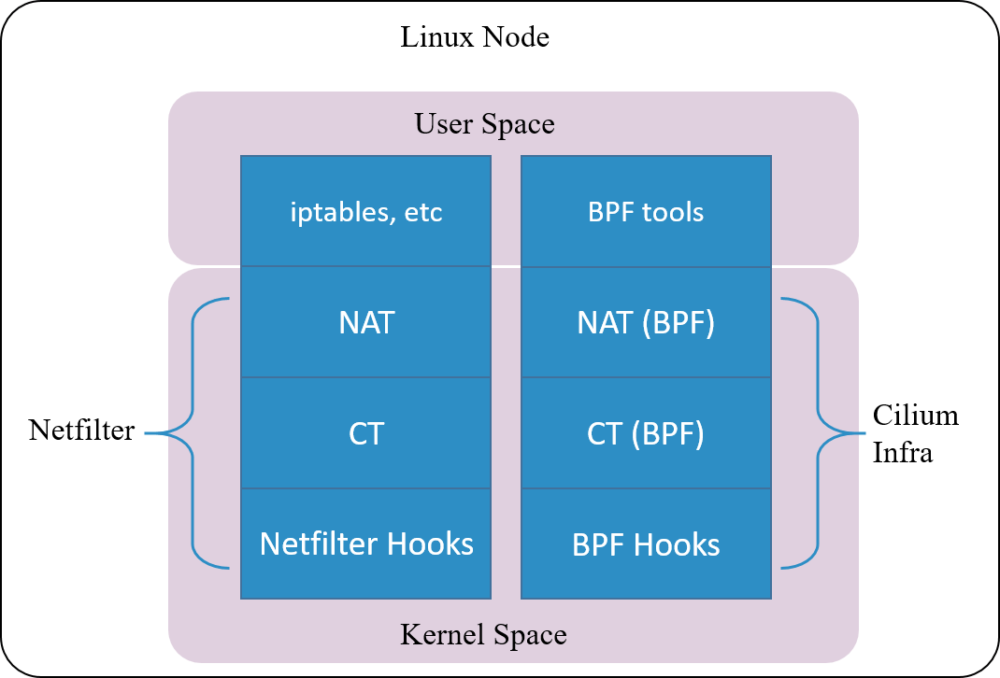
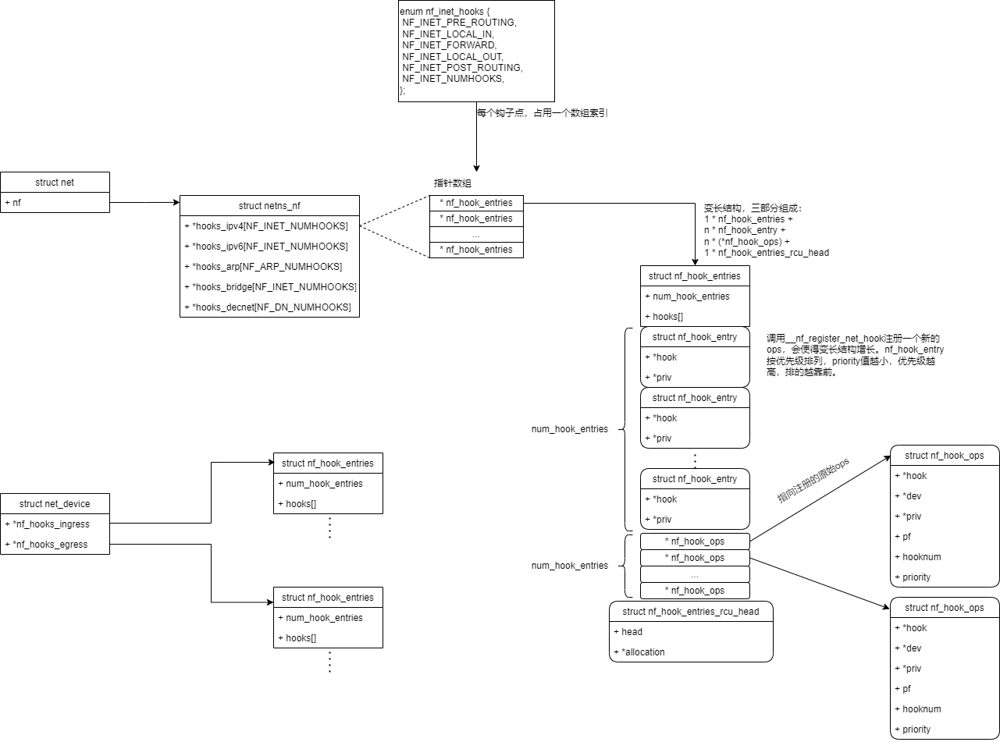
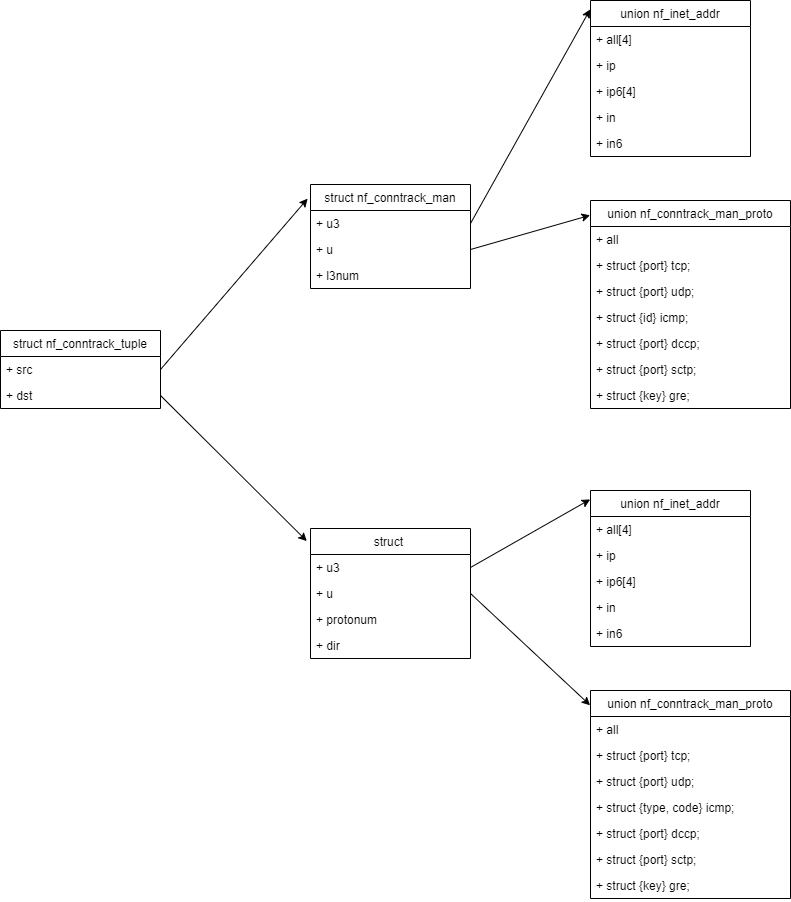
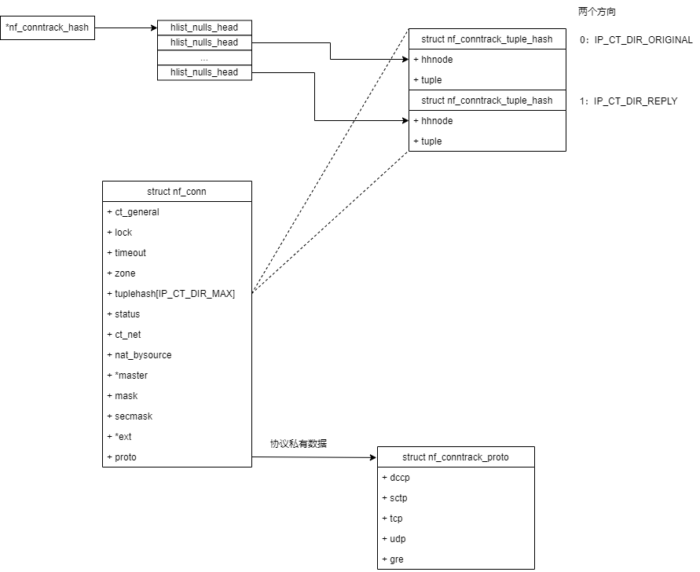
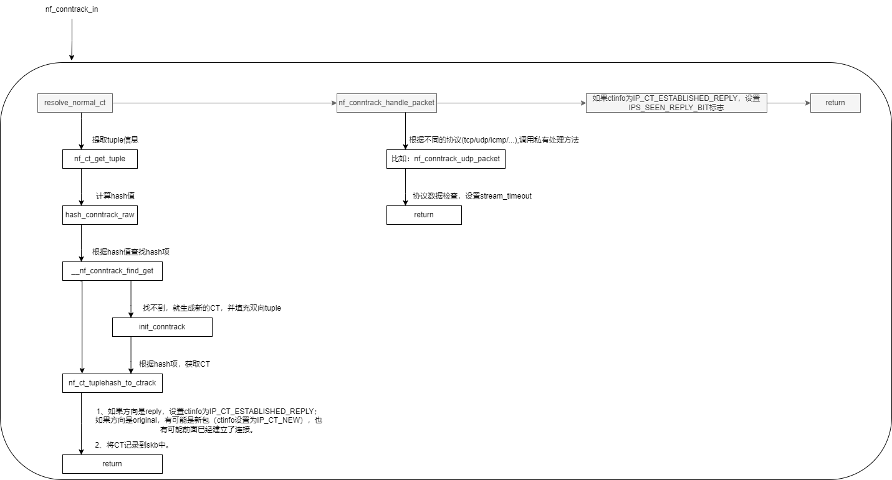
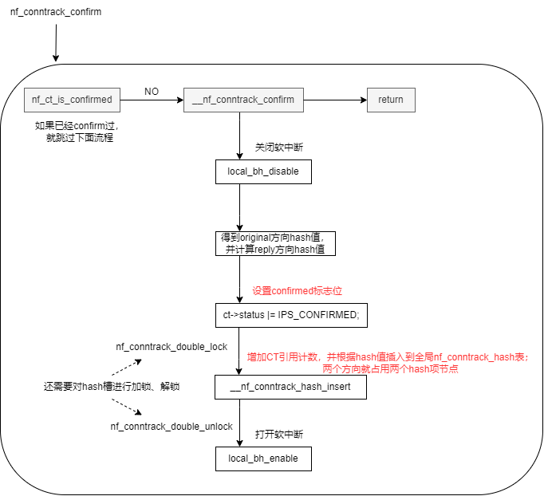
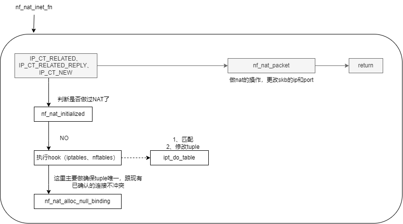
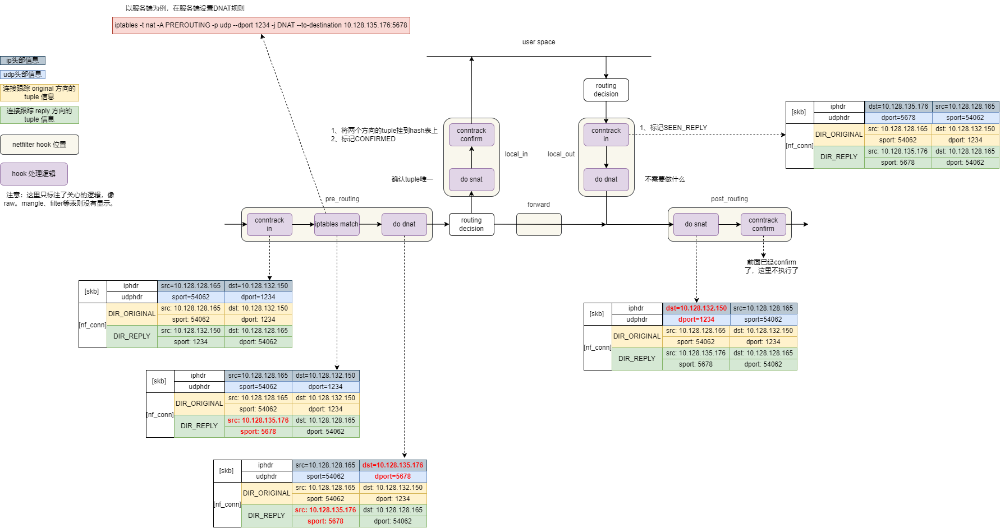

netfilter
注：一些基础概念（比如常用的5个Hook点）这里就不赘述了。
1. netfilter hooks

对于每个 地址族（Address Families），内核在数据包处理路径的特定阶段放置了一些钩子（Hooks）。
新版内核增加了 Netdev 地址族，处理设备入口和出口路径的数据包，允许过滤任何 以太网 类型的数据包。它可以用于早期过滤（filtering）和监管（policing）。
- ingress：调用时机，在 tc ingress 之后，三层协议处理程序之前；调用函数（nf_hook_ingress）；
- egress：调用时机，在三层协议处理程序之后， tc egress 之前；调用函数（nf_hook_egress）；
2. 连接跟踪（Connection Tracking，conntrack，CT）
关键词：
- 元组（tuple）：用来区分数据流（flow），并跟踪一条连接；
- 比如从数据包中提取五元组信息（源IP地址，目的IP地址，源端口，目的端口，协议号）。
- 连接跟踪中的 连接（connection）：要跟 “TCP是有连接的”，“UDP是无连接的” 区分；
- TCP、UDP、ICMP 都是有连接跟踪记录的。
- 但不是所有协议都会被连接跟踪。
- 连接跟踪表（connection table）：hash table实现，用于连接插入，查找等，key 为tuple信息；
- GC：连接跟踪过期回收；
- Zone：多租户环境下，无法只用 tuple 来区分 CT ，所以引入 Zone 的概念。不同租户使用不同的 zone id ，从而保证租户之间的隔离。
# 将 eth1 网口收到数据包打上 zone 1 的标记
$ iptables -t raw -A PREROUTING -i eth1 -j CT --zone 1
CT 模块只是完成连接信息的采集和录入功能，并不会修改或丢弃数据包，后者是其 他模块（例如 NAT）基于 Netfilter hook 完成的。
由于netfilter数据包路径过长，Cilium 实现一套独立的 CT 和 NAT 机制。即使卸载 Netfilter 模块，也不影响其对 Kubernetes Service 功能的支持。

3. iptables

4. 主要的数据结构
4.1. 钩子 nf_hook_ops

# 打印ipv4已经注册的钩子
<4>[11225.949841] ==== PRE_ROUTING ====
<4>[11225.949842] ipv4_conntrack_defrag+0x0/0x120 [nf_defrag_ipv4]
<4>[11225.949847] ipv4_conntrack_in+0x0/0x20 [nf_conntrack]
<4>[11225.949859] nft_do_chain_inet+0x0/0xe0 [nf_tables]
<4>[11225.949872] nf_nat_ipv4_pre_routing+0x0/0xc0 [nf_nat]
<4>[11225.949877] nft_do_chain_inet+0x0/0xe0 [nf_tables]
<4>[11225.949886]
<4>[11225.949886] ==== LOCAL_IN ====
<4>[11225.949887] nft_do_chain_inet+0x0/0xe0 [nf_tables]
<4>[11225.949895] nf_nat_ipv4_local_in+0x0/0x120 [nf_nat]
<4>[11225.949900] nf_confirm+0x0/0x2b0 [nf_conntrack]
<4>[11225.949908]
<4>[11225.949908] ==== FORWARD ====
<4>[11225.949909] selinux_ip_forward+0x0/0x1f0
<4>[11225.949921] nft_do_chain_inet+0x0/0xe0 [nf_tables]
<4>[11225.949930]
<4>[11225.949930] ==== LOCAL_OUT ====
<4>[11225.949931] ipv4_conntrack_defrag+0x0/0x120 [nf_defrag_ipv4]
<4>[11225.949934] selinux_ip_output+0x0/0x70
<4>[11225.949936] ipv4_conntrack_local+0x0/0x90 [nf_conntrack]
<4>[11225.949944] nf_nat_ipv4_local_fn+0x0/0x120 [nf_nat]
<4>[11225.949949] nft_do_chain_inet+0x0/0xe0 [nf_tables]
<4>[11225.949957]
<4>[11225.949958] ==== POST_ROUTING ====
<4>[11225.949958] nf_nat_ipv4_out+0x0/0x100 [nf_nat]
<4>[11225.949962] selinux_ip_postroute+0x0/0x400
<4>[11225.949964] nf_confirm+0x0/0x2b0 [nf_conntrack]
4.2. 元组 nf_conntrack_tuple
nf_conntrack_tuple.h中注释说到
We divide the structure along "manipulatable" and "non-manipulatable" lines, for the benefit of the NAT code.

从以上定义可知，CT 模块目前只支持以下六种协议：TCP、UDP、ICMP、DCCP、SCTP、GRE。
比如，ICMP使用以下信息来填充tuple：源IP、目的IP、icmp头部字段（type、code、id）
4.3. 连接跟踪表的表项 nf_conntrack_tuple_hash
每一个表项存储一个tuple，哈希值（key）是根据tuple信息计算得到。
struct nf_conntrack_tuple_hash {
struct hlist_nulls_node hnnode;
struct nf_conntrack_tuple tuple;
};
static u32 hash_conntrack_raw(const struct nf_conntrack_tuple *tuple,
unsigned int zoneid,
const struct net *net)
{
u64 a, b, c, d;
get_random_once(&nf_conntrack_hash_rnd, sizeof(nf_conntrack_hash_rnd));
/* The direction must be ignored, handle usable tuplehash members manually */
a = (u64)tuple->src.u3.all[0] << 32 | tuple->src.u3.all[3];
b = (u64)tuple->dst.u3.all[0] << 32 | tuple->dst.u3.all[3];
c = (__force u64)tuple->src.u.all << 32 | (__force u64)tuple->dst.u.all << 16;
c |= tuple->dst.protonum;
d = (u64)zoneid << 32 | net_hash_mix(net);
/* IPv4: u3.all[1,2,3] == 0 */
c ^= (u64)tuple->src.u3.all[1] << 32 | tuple->src.u3.all[2];
d += (u64)tuple->dst.u3.all[1] << 32 | tuple->dst.u3.all[2];
// 计算hash值使用的元素：
// 源IP
// 目的IP
// 协议号
// 协议自身特有属性，比如UDP的src/dst port，ICMP的type/code/id
// Zone id
// net->hash_mix，初始化网络命名空间时提供的随机数
// nf_conntrack_hash_rnd 随机数
return (u32)siphash_4u64(a, b, c, d, &nf_conntrack_hash_rnd);
}
4.4. 连接跟踪信息结构 nf_conn

5. ipv4_conntrack_defrag
保证进入 CT 的包都是完整的数据包，而非分片包。
ipv4_conntrack_defrag
| ip_is_fragment
| ip_defrag
| return NF_STOLEN; // 分片包进入队列重组，就被偷走了。
6. nf_conntrack_in
连接跟踪入口
从4.1可以得知，
PRE_ROUTING: ipv4_conntrack_in -> nf_conntrack_in
LOCAL_OUT: ipv4_conntrack_local -> nf_conntrack_in
为什么是这两个 hook 点呢？因为它们都是新连接的第一个包最先达到的地方
- PRE_ROUTING： 是外部主动和本机建连时包最先到达的地方；
- LOCAL_OUT： 是本机主动和外部建连时包最先到达的地方；

7. nf_conntrack_confirm
连接跟踪确认
从4.1可以得知，
LOCAL_IN: nf_confirm -> nf_conntrack_confirm
POST_ROUTING: nf_confirm -> nf_conntrack_confirm
为什么是这两个 hook 点呢？因为如果新连接的第一个包没有被丢弃，那这 是它们离开 netfilter 之前的最后 hook 点：
- LOCAL_IN： 外部主动和本机建连的包，如果在中间处理中没有被丢弃，LOCAL_IN 是其被送到应用之前的最后 hook 点；
- POST_ROUTING： 本机主动和外部建连的包，如果在中间处理中没有被丢弃，POST_ROUTING 是其离开主机时的最后 hook 点；

从上图可知，就能知道confirm为什么要放到最后处理：
- 关闭/开启软中断、对hash槽加解锁，在短连接、高并发场景十分损耗性能。
8. nf_nat_inet_fn
- SNAT hook 挂在两个位置：LOCAL_IN、POST_ROUTING
- DNAT hook 挂在两个位置：PRE_ROUTING、LOCAL_OUT
// 四个hook的主要处理函数都是：nf_nat_inet_fn
[ PRE_ROUTING ]：nf_nat_ipv4_pre_routing -> nf_nat_inet_fn
[ LOCAL_IN ]：nf_nat_ipv4_local_in -> nf_nat_inet_fn
[ LOCAL_OUT ]：nf_nat_ipv4_local_fn -> nf_nat_inet_fn
[ POST_ROUTING ]：nf_nat_ipv4_out -> nf_nat_inet_fn

9. 实验（udp+dnat）
在服务端配置DNAT规则，并在服务端分析netfilter处理流程，以及连接跟踪的变化。
客户端 10.128.128.165 发送UDP包到 服务端 10.128.132.150:1234，服务端收到包后DNAT到本机10.128.135.176:5678

10. perf 跟踪函数堆栈
# 方便测试
# 如果开启了网卡多队列，则设置 enp0s8 当前使用 1 个队列
# 网卡多队列需要驱动支持
$ ethtool -L enp0s8 combined 1
# 将网卡中断绑定到 CPU0
$ echo 0 > /proc/irq/$(cat /proc/interrupts | awk -F ':' '/enp0s8/ {gsub(/ /,""); print $1}')/smp_affinity_list
# perf ftrace
$ perf ftrace -C0 -G '__netif_receive_skb_list_core' -g 'smp_*'
0) 0.664 us | __netif_receive_skb_core.constprop.0();
0) | ip_list_rcv() {
0) 0.304 us | ip_rcv_core();
0) | ip_sublist_rcv() {
0) 0.134 us | __rcu_read_lock();
0) | nf_hook_slow_list() {
0) | nf_hook_slow() {
0) 0.139 us | ipv4_conntrack_defrag [nf_defrag_ipv4]();
0) | ipv4_conntrack_in [nf_conntrack]() {
0) | nf_conntrack_in [nf_conntrack]() {
0) 0.154 us | get_l4proto [nf_conntrack]();
0) | nf_conntrack_icmpv4_error [nf_conntrack]() {
0) | nf_ip_checksum() {
0) | __skb_checksum_complete() {
0) | __skb_checksum() {
0) 0.143 us | csum_partial();
0) 0.508 us | }
0) 0.895 us | }
0) 1.225 us | }
0) 1.578 us | }
0) | nf_ct_get_tuple [nf_conntrack]() {
0) 0.141 us | icmp_pkt_to_tuple [nf_conntrack]();
0) 0.539 us | }
0) 0.347 us | hash_conntrack_raw [nf_conntrack]();
0) | __nf_conntrack_find_get [nf_conntrack]() {
0) 0.134 us | __rcu_read_lock();
0) 0.151 us | __rcu_read_unlock();
0) 0.908 us | }
0) | init_conntrack.constprop.0 [nf_conntrack]() {
0) | nf_ct_invert_tuple [nf_conntrack]() {
0) 0.197 us | nf_conntrack_invert_icmp_tuple [nf_conntrack]();
0) 0.471 us | }
0) | __nf_conntrack_alloc [nf_conntrack]() {
0) 0.139 us | __rcu_read_lock();
0) 0.128 us | __rcu_read_unlock();
0) | kmem_cache_alloc() {
0) 0.139 us | should_failslab();
0) 1.162 us | }
0) 2.573 us | }
0) 0.153 us | nf_ct_ecache_ext_add [nf_conntrack]();
0) 0.139 us | __rcu_read_lock();
0) 0.129 us | __rcu_read_unlock();
0) 4.388 us | }
0) | nf_conntrack_icmp_packet [nf_conntrack]() {
0) | __nf_ct_refresh_acct [nf_conntrack]() {
0) 0.139 us | nf_ct_acct_add [nf_conntrack]();
0) 0.402 us | }
0) 0.734 us | }
0) + 10.332 us | }
0) + 10.660 us | }
0) | nft_do_chain_inet [nf_tables]() {
0) | nft_do_chain [nf_tables]() {
0) 0.154 us | nft_immediate_eval [nf_tables]();
0) 0.196 us | nft_meta_get_eval [nf_tables]();
0) 0.143 us | nft_immediate_eval [nf_tables]();
0) 0.143 us | nft_immediate_eval [nf_tables]();
0) 0.149 us | nft_immediate_eval [nf_tables]();
0) 0.133 us | nft_immediate_eval [nf_tables]();
0) 0.135 us | nft_immediate_eval [nf_tables]();
0) 0.134 us | nft_immediate_eval [nf_tables]();
0) 0.134 us | nft_immediate_eval [nf_tables]();
0) 0.133 us | nft_immediate_eval [nf_tables]();
0) 0.136 us | nft_immediate_eval [nf_tables]();
0) 0.135 us | nft_immediate_eval [nf_tables]();
0) 0.136 us | nft_immediate_eval [nf_tables]();
0) 0.136 us | nft_immediate_eval [nf_tables]();
0) 0.135 us | nft_immediate_eval [nf_tables]();
0) 0.136 us | nft_immediate_eval [nf_tables]();
0) 8.586 us | }
0) 9.044 us | }
0) | nf_nat_ipv4_pre_routing [nf_nat]() {
0) | nf_nat_inet_fn [nf_nat]() {
0) | nft_nat_do_chain [nft_chain_nat]() {
0) | nft_do_chain [nf_tables]() {
0) 0.137 us | nft_immediate_eval [nf_tables]();
0) 0.161 us | nft_meta_get_eval [nf_tables]();
0) 0.136 us | nft_immediate_eval [nf_tables]();
0) 0.133 us | nft_immediate_eval [nf_tables]();
0) 0.138 us | nft_immediate_eval [nf_tables]();
0) 0.134 us | nft_immediate_eval [nf_tables]();
0) 0.137 us | nft_immediate_eval [nf_tables]();
0) 0.135 us | nft_immediate_eval [nf_tables]();
0) 0.135 us | nft_immediate_eval [nf_tables]();
0) 0.133 us | nft_immediate_eval [nf_tables]();
0) 0.134 us | nft_immediate_eval [nf_tables]();
0) 0.134 us | nft_immediate_eval [nf_tables]();
0) 0.134 us | nft_immediate_eval [nf_tables]();
0) 0.134 us | nft_immediate_eval [nf_tables]();
0) 0.134 us | nft_immediate_eval [nf_tables]();
0) 0.200 us | nft_immediate_eval [nf_tables]();
0) 6.108 us | }
0) 6.381 us | }
0) | __nf_nat_alloc_null_binding [nf_nat]() {
0) | nf_nat_setup_info [nf_nat]() {
0) | nf_ct_invert_tuple [nf_conntrack]() {
0) 0.128 us | nf_conntrack_invert_icmp_tuple [nf_conntrack]();
0) 0.388 us | }
0) | nf_ct_invert_tuple [nf_conntrack]() {
0) 0.138 us | nf_conntrack_invert_icmp_tuple [nf_conntrack]();
0) 0.399 us | }
0) | nf_conntrack_tuple_taken [nf_conntrack]() {
0) 0.143 us | __rcu_read_lock();
0) 0.164 us | hash_conntrack_raw [nf_conntrack]();
0) 0.131 us | __rcu_read_unlock();
0) 1.073 us | }
0) 2.539 us | }
0) 2.877 us | }
0) + 10.226 us | }
0) + 10.647 us | }
0) | nft_do_chain_inet [nf_tables]() {
0) | nft_do_chain [nf_tables]() {
0) 0.159 us | nft_meta_get_eval [nf_tables]();
0) 0.142 us | nft_meta_get_eval [nf_tables]();
0) 0.964 us | }
0) 1.218 us | }
0) + 33.608 us | }
0) + 33.982 us | }
0) 0.129 us | __rcu_read_unlock();
0) | ip_rcv_finish_core.constprop.0() {
0) | ip_route_input_noref() {
0) 0.136 us | __rcu_read_lock();
0) | ip_route_input_slow() {
0) | make_kuid() {
0) 0.306 us | map_id_range_down();
0) 0.630 us | }
0) 0.137 us | __rcu_read_lock();
0) | fib_table_lookup() {
0) 0.515 us | fib_lookup_good_nhc();
0) 2.229 us | }
0) 0.132 us | __rcu_read_unlock();
0) | fib_validate_source() {
0) | __fib_validate_source() {
0) 0.131 us | l3mdev_master_ifindex_rcu();
0) | make_kuid() {
0) 0.134 us | map_id_range_down();
0) 0.390 us | }
0) 0.135 us | __rcu_read_lock();
0) | fib_table_lookup() {
0) 0.144 us | fib_lookup_good_nhc();
0) 0.512 us | }
0) 0.132 us | __rcu_read_unlock();
0) 0.144 us | fib_info_nh_uses_dev();
0) 2.537 us | }
0) 2.874 us | }
0) 8.436 us | }
0) 0.130 us | __rcu_read_unlock();
0) 9.285 us | }
0) 9.647 us | }
0) | ip_sublist_rcv_finish() {
0) | ip_local_deliver() {
0) 0.136 us | __rcu_read_lock();
0) | nf_hook_slow() {
0) | nft_do_chain_inet [nf_tables]() {
0) | nft_do_chain [nf_tables]() {
0) 0.153 us | nft_ct_get_eval [nft_ct]();
0) | nft_lookup_eval [nf_tables]() {
0) | nft_set_do_lookup [nf_tables]() {
0) 0.372 us | nft_hash_lookup_fast [nf_tables]();
0) 0.894 us | }
0) 0.152 us | nft_set_catchall_lookup [nf_tables]();
0) 1.594 us | }
0) 0.168 us | nft_ct_get_eval [nft_ct]();
0) 0.168 us | nft_meta_get_eval [nf_tables]();
0) 0.144 us | nft_immediate_eval [nf_tables]();
0) 0.158 us | nft_meta_get_eval [nf_tables]();
0) 0.144 us | nft_immediate_eval [nf_tables]();
0) 0.138 us | nft_immediate_eval [nf_tables]();
0) 0.202 us | nft_immediate_eval [nf_tables]();
0) 0.136 us | nft_immediate_eval [nf_tables]();
0) 0.151 us | nft_immediate_eval [nf_tables]();
0) 0.136 us | nft_immediate_eval [nf_tables]();
0) 0.134 us | nft_immediate_eval [nf_tables]();
0) 0.138 us | nft_meta_get_eval [nf_tables]();
0) 0.144 us | nft_meta_get_eval [nf_tables]();
0) 0.128 us | nft_meta_get_eval [nf_tables]();
0) 0.129 us | nft_meta_get_eval [nf_tables]();
0) 0.142 us | nft_immediate_eval [nf_tables]();
0) 0.137 us | nft_immediate_eval [nf_tables]();
0) 0.137 us | nft_immediate_eval [nf_tables]();
0) 0.137 us | nft_immediate_eval [nf_tables]();
0) 0.137 us | nft_immediate_eval [nf_tables]();
0) 0.140 us | nft_meta_get_eval [nf_tables]();
0) 0.132 us | nft_meta_get_eval [nf_tables]();
0) 0.134 us | nft_meta_get_eval [nf_tables]();
0) 0.136 us | nft_immediate_eval [nf_tables]();
0) 0.136 us | nft_immediate_eval [nf_tables]();
0) 0.150 us | nft_meta_get_eval [nf_tables]();
0) | nft_lookup_eval [nf_tables]() {
0) | nft_set_do_lookup [nf_tables]() {
0) 0.185 us | nft_bitmap_lookup [nf_tables]();
0) 0.700 us | }
0) 0.973 us | } /* nft_lookup_eval [nf_tables] */
0) 0.150 us | nft_immediate_eval [nf_tables]();
0) + 13.273 us | }
0) + 13.523 us | }
0) | nf_nat_ipv4_local_in [nf_nat]() {
0) | nf_nat_inet_fn [nf_nat]() {
0) | __nf_nat_alloc_null_binding [nf_nat]() {
0) | nf_nat_setup_info [nf_nat]() {
0) | nf_ct_invert_tuple [nf_conntrack]() {
0) 0.129 us | nf_conntrack_invert_icmp_tuple [nf_conntrack]();
0) 0.397 us | }
0) 0.165 us | in_range [nf_nat]();
0) | nf_ct_invert_tuple [nf_conntrack]() {
0) 0.130 us | nf_conntrack_invert_icmp_tuple [nf_conntrack]();
0) 0.388 us | }
0) | nf_conntrack_tuple_taken [nf_conntrack]() {
0) 0.129 us | __rcu_read_lock();
0) 0.153 us | hash_conntrack_raw [nf_conntrack]();
0) 0.131 us | __rcu_read_unlock();
0) 0.914 us | }
0) 0.474 us | hash_by_src [nf_nat]();
0) | _raw_spin_lock_bh() {
0) 0.133 us | preempt_count_add();
0) 0.402 us | }
0) | _raw_spin_unlock_bh() {
0) | __local_bh_enable_ip() {
0) 0.138 us | preempt_count_sub();
0) 0.415 us | }
0) 0.684 us | }
0) 4.755 us | }
0) 5.027 us | }
0) 5.376 us | }
0) 5.642 us | }
0) | nf_confirm [nf_conntrack]() {
0) | __nf_conntrack_confirm [nf_conntrack]() {
0) 0.131 us | preempt_count_add();
0) 0.161 us | hash_conntrack_raw [nf_conntrack]();
0) | nf_conntrack_double_lock.constprop.0 [nf_conntrack]() {
0) | _raw_spin_lock() {
0) 0.129 us | preempt_count_add();
0) 0.759 us | }
0) | _raw_spin_lock() {
0) 0.129 us | preempt_count_add();
0) 0.446 us | }
0) 1.604 us | }
0) 0.380 us | get_random_u8();
0) 0.137 us | __nf_conntrack_insert_prepare [nf_conntrack]();
0) 0.149 us | __nf_conntrack_hash_insert [nf_conntrack]();
0) | _raw_spin_unlock() {
0) 0.137 us | preempt_count_sub();
0) 0.387 us | }
0) | _raw_spin_unlock() {
0) 0.127 us | preempt_count_sub();
0) 0.385 us | }
0) | __local_bh_enable_ip() {
0) 0.128 us | preempt_count_sub();
0) 0.385 us | }
0) 5.119 us | }
0) 5.464 us | }
0) + 25.313 us | }
0) 0.137 us | __rcu_read_unlock();
0) | ip_local_deliver_finish() {
0) 0.146 us | __rcu_read_lock();
0) | ip_protocol_deliver_rcu() {
0) | raw_local_deliver() {
0) 0.130 us | __rcu_read_lock();
0) 0.141 us | __rcu_read_unlock();
0) 0.730 us | }
0) | icmp_rcv() {
0) | icmp_echo() {
0) | icmp_echo.part.0() {
0) | icmp_reply() {
0) 0.143 us | __ip_options_echo();
0) 0.141 us | preempt_count_add();
0) | _raw_spin_trylock() {
0) 0.130 us | preempt_count_add();
0) 0.471 us | }
0) 0.138 us | fib_compute_spec_dst();
0) | make_kuid() {
0) 0.136 us | map_id_range_down();
0) 0.391 us | }
0) 0.135 us | __rcu_read_lock();
0) 0.129 us | l3mdev_master_ifindex_rcu();
0) 0.130 us | __rcu_read_unlock();
0) | security_skb_classify_flow() {
0) | selinux_xfrm_decode_session() {
0) 0.144 us | selinux_xfrm_skb_sid_ingress();
0) 0.451 us | }
0) 0.135 us | bpf_lsm_xfrm_decode_session();
0) 1.509 us | }
0) | ip_route_output_flow() {
0) 0.135 us | __rcu_read_lock();
0) | ip_route_output_key_hash_rcu() {
0) | __ip_dev_find() {
0) 0.135 us | __rcu_read_lock();
0) 0.126 us | __rcu_read_unlock();
0) 0.938 us | }
0) 0.134 us | __rcu_read_lock();
0) | fib_table_lookup() {
0) 0.142 us | fib_lookup_good_nhc();
0) 0.435 us | }
0) 0.130 us | __rcu_read_unlock();
0) 0.148 us | fib_select_path();
0) 0.145 us | find_exception();
0) 3.419 us | }
0) 0.128 us | __rcu_read_unlock();
0) | xfrm_lookup_route() {
0) 0.329 us | xfrm_lookup_with_ifid();
0) 0.664 us | }
0) 5.116 us | }
0) 0.151 us | icmpv4_xrlim_allow();
0) | icmp_push_reply() {
0) | ip_append_data() {
0) | ip_setup_cork() {
0) 0.284 us | ipv4_mtu();
0) 0.633 us | }
0) | __ip_append_data() {
0) | sock_alloc_send_pskb() {
0) | alloc_skb_with_frags() {
0) | __alloc_skb() {
0) | kmem_cache_alloc_node() {
0) 0.126 us | should_failslab();
0) 0.904 us | }
0) | kmalloc_size_roundup() {
0) 0.201 us | kmalloc_slab();
0) 0.600 us | }
0) | __kmalloc_node_track_caller() {
0) 0.130 us | kmalloc_slab();
0) | __kmem_cache_alloc_node() {
0) 0.128 us | should_failslab();
0) 0.609 us | }
0) 1.199 us | }
0) 0.132 us | __build_skb_around();
0) 3.710 us | }
0) 4.000 us | }
0) 0.155 us | skb_set_owner_w();
0) 4.672 us | }
0) 0.131 us | skb_put();
0) | icmp_glue_bits() {
0) | skb_copy_and_csum_bits() {
0) 0.259 us | csum_partial_copy_nocheck();
0) 0.547 us | }
0) 0.930 us | }
0) 6.777 us | }
0) 7.943 us | }
0) 0.153 us | csum_partial_copy_nocheck();
0) | ip_push_pending_frames() {
0) | __ip_make_skb() {
0) 0.148 us | ipv4_mtu();
0) | __ip_select_ident() {
0) | __get_random_u32_below() {
0) 0.181 us | get_random_u32();
0) 0.554 us | }
0) 1.139 us | }
0) 0.207 us | icmp_out_count();
0) 0.141 us | kfree();
0) 0.135 us | dst_release();
0) 2.757 us | }
0) | __ip_local_out() {
0) 0.136 us | ip_send_check();
0) 0.137 us | __rcu_read_lock();
0) | nf_hook_slow() {
0) 0.147 us | ipv4_conntrack_defrag [nf_defrag_ipv4]();
0) | selinux_ip_output() {
0) 0.493 us | netlbl_enabled();
0) 0.833 us | }
0) | ipv4_conntrack_local [nf_conntrack]() {
0) | nf_conntrack_in [nf_conntrack]() {
0) 0.134 us | get_l4proto [nf_conntrack]();
0) 0.152 us | nf_conntrack_icmpv4_error [nf_conntrack]();
0) | nf_ct_get_tuple [nf_conntrack]() {
0) 0.131 us | icmp_pkt_to_tuple [nf_conntrack]();
0) 0.386 us | }
0) 0.160 us | hash_conntrack_raw [nf_conntrack]();
0) | __nf_conntrack_find_get [nf_conntrack]() {
0) 0.129 us | __rcu_read_lock();
0) 0.129 us | __rcu_read_unlock();
0) 0.731 us | }
0) | nf_conntrack_icmp_packet [nf_conntrack]() {
0) | __nf_ct_refresh_acct [nf_conntrack]() {
0) 9.340 us | nf_ct_acct_add [nf_conntrack]();
0) 9.764 us | }
0) + 11.211 us | }
0) + 13.864 us | }
0) + 14.184 us | }
0) | nf_nat_ipv4_local_fn [nf_nat]() {
0) 0.262 us | nf_nat_inet_fn [nf_nat]();
0) 0.897 us | }
0) | nft_do_chain_inet [nf_tables]() {
0) | nft_do_chain [nf_tables]() {
0) 0.193 us | nft_ct_get_eval [nft_ct]();
0) | nft_lookup_eval [nf_tables]() {
0) | nft_set_do_lookup [nf_tables]() {
0) 0.315 us | nft_hash_lookup_fast [nf_tables]();
0) 1.286 us | }
0) 1.617 us | }
0) 0.190 us | nft_immediate_eval [nf_tables]();
0) 3.103 us | }
0) 3.468 us | }
0) + 20.908 us | }
0) 0.171 us | __rcu_read_unlock();
0) + 22.213 us | }
0) | ip_output() {
0) 0.164 us | __rcu_read_lock();
0) | nf_hook_slow() {
0) | nf_nat_ipv4_out [nf_nat]() {
0) 0.249 us | nf_nat_inet_fn [nf_nat]();
0) 0.568 us | }
0) | selinux_ip_postroute() {
0) 0.196 us | netlbl_enabled();
0) 2.101 us | }
0) 0.277 us | nf_confirm [nf_conntrack]();
0) 3.921 us | }
0) 0.169 us | __rcu_read_unlock();
0) | ip_finish_output() {
0) | __ip_finish_output() {
0) | ip_finish_output2() {
0) 0.167 us | preempt_count_add();
0) | __dev_queue_xmit() {
0) 0.134 us | preempt_count_add();
0) 0.138 us | dst_release();
0) 0.160 us | netdev_core_pick_tx();
0) | _raw_spin_lock() {
0) 0.129 us | preempt_count_add();
0) 0.383 us | }
0) | sch_direct_xmit() {
0) | _raw_spin_unlock() {
0) 0.138 us | preempt_count_sub();
0) 0.416 us | }
0) | validate_xmit_skb_list() {
0) | validate_xmit_skb() {
0) | netif_skb_features() {
0) 0.142 us | skb_network_protocol();
0) 0.839 us | }
0) 0.144 us | validate_xmit_xfrm();
0) 1.517 us | }
0) 1.785 us | }
0) | _raw_spin_lock() {
0) 0.130 us | preempt_count_add();
0) 0.514 us | }
0) | dev_hard_start_xmit() {
0) | e1000_xmit_frame [e1000]() {
0) 0.133 us | e1000_maybe_stop_tx [e1000]();
0) 0.154 us | is_vmalloc_addr();
0) | dma_map_page_attrs() {
0) 0.129 us | is_swiotlb_active();
0) | swiotlb_map() {
0) | swiotlb_tbl_map_single() {
0) | _raw_spin_lock_irqsave() {
0) 0.135 us | preempt_count_add();
0) 0.550 us | }
0) | _raw_spin_unlock_irqrestore() {
0) 0.136 us | preempt_count_sub();
0) 0.411 us | }
0) 0.391 us | swiotlb_bounce();
0) 2.369 us | }
0) 2.704 us | }
0) 3.553 us | }
0) 0.147 us | skb_clone_tx_timestamp();
0) 0.129 us | e1000_maybe_stop_tx [e1000]();
0) + 12.445 us | }
0) + 12.900 us | }
0) | _raw_spin_unlock() {
0) 0.135 us | preempt_count_sub();
0) 0.440 us | }
0) | _raw_spin_lock() {
0) 0.131 us | preempt_count_add();
0) 0.385 us | }
0) + 17.376 us | }
0) | __qdisc_run() {
0) 0.148 us | fq_codel_dequeue();
0) 0.703 us | }
0) | _raw_spin_unlock() {
0) 0.127 us | preempt_count_sub();
0) 0.378 us | }
0) | __local_bh_enable_ip() {
0) 0.129 us | preempt_count_sub();
0) 0.393 us | }
0) + 21.557 us | }
0) | __local_bh_enable_ip() {
0) 0.129 us | preempt_count_sub();
0) 0.389 us | }
0) + 23.346 us | }
0) + 23.899 us | }
0) + 24.289 us | }
0) + 29.468 us | }
0) + 55.295 us | }
0) + 64.037 us | }
0) 0.130 us | dst_release();
0) | _raw_spin_unlock() {
0) 0.125 us | preempt_count_sub();
0) 0.385 us | }
0) | __local_bh_enable_ip() {
0) 0.128 us | preempt_count_sub();
0) 0.387 us | }
0) + 75.989 us | }
0) + 76.256 us | }
0) + 76.570 us | }
0) | consume_skb() {
0) 0.154 us | skb_release_head_state();
0) | skb_release_data() {
0) | skb_free_head() {
0) 0.204 us | page_frag_free();
0) 0.549 us | }
0) 0.966 us | }
0) | kfree_skbmem() {
0) | kmem_cache_free() {
0) 0.263 us | __slab_free();
0) 1.281 us | }
0) 1.563 us | }
0) 3.364 us | }
0) + 80.580 us | }
0) + 82.442 us | }
0) 0.131 us | __rcu_read_unlock();
0) + 83.239 us | }
0) ! 109.575 us | }
0) ! 109.916 us | }
0) ! 154.893 us | }
0) ! 155.721 us | }
0) ! 232.338 us | }